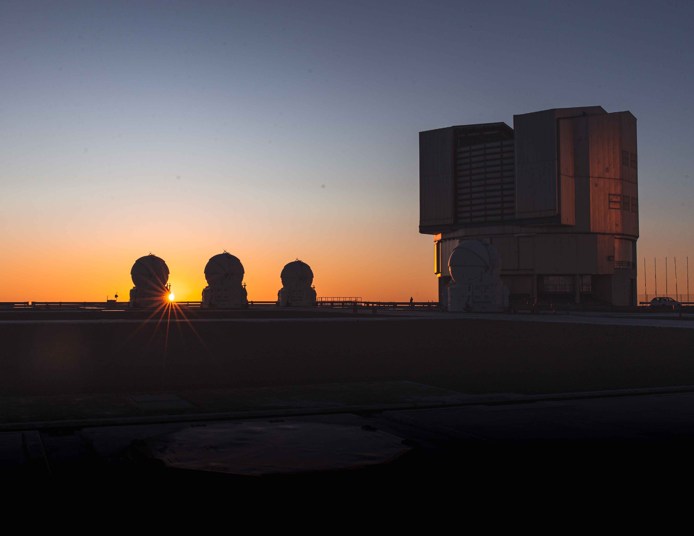

-
2023 - Present
PhD
Leiden University
Leiden, NL
Astrophotography


PhD candidate in Astronomy at Leiden University
📬picos@strw.leidenuniv.nl
I work with observations from ground-based telescopes such as the Very Large Telescope (VLT) to study the atmospheres of directly-imaged exoplanets and brown dwarfs. I am interested in the physical and chemical processes that determine the observed spectra, and how we can use high-resolution spectroscopy to characterize their atmospheres in detail. I am also interested in the development of new techniques to improve the quality of the data and the analysis of the observations.
picos@strw.leidenuniv.nl
Office Oort 570
Niels Bohrweg 2, Leiden (NL)
To check an up-to-date list of my publications, please visit my ADS page.